State Demography Office - Applications
Featured
 ACS 2010-2014
ACS 2010-2014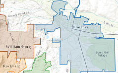Municipal Boundary Map
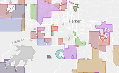Special Districts Map
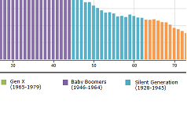Age Animation
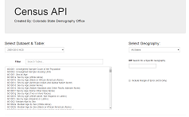Query Data
Census and American Community Survey
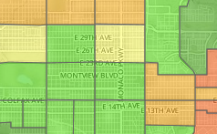ACS 2008-2012 Data
 ACS 2007-2011 Data
ACS 2007-2011 Data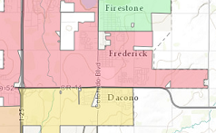Census 2010 Data
 Census 2000 SF1 Data
Census 2000 SF1 Data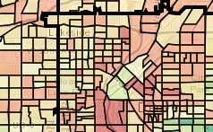2000 Census SF3
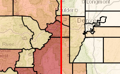2010 vs 2000 Census
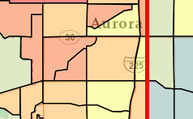ACS '07-'11 vs 2000 Census SF3
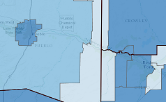Health Insurance Coverage
Population
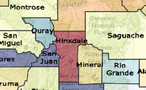Population Change:
Births, Deaths, and Migration
Births, Deaths, and Migration
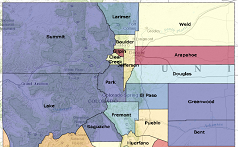Historic Colorado Population
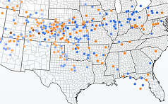Inter-State Migration 06-10
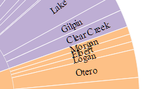Animated Population Chart
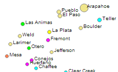Colorado County Population
Economic
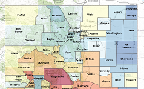Unemployment Map
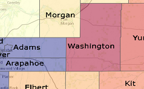Jobs Mapping
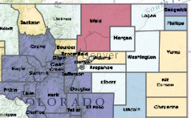Oil, Natural Gas, CO2 Production
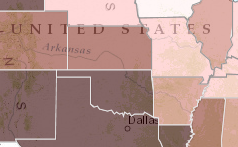Oil and Natural Gas Production by State
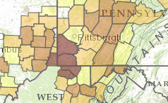State and County Coal Production
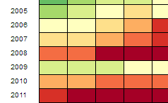Retail Gasoline Prices
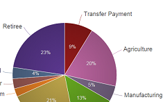Jobs: Base Analysis
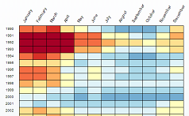US County/Metro Unemployment
Income and Poverty
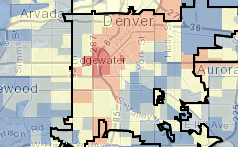Colorado Poverty Map
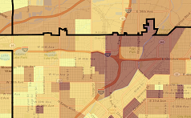Household Poverty, 2007-2011 ACS
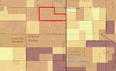Individual Poverty, 2007-2011 ACS
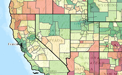National: SAIPE - Income & Poverty
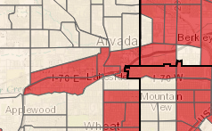Low & Moderate Income (HUD FY 2014)
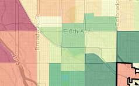Poverty by Age
Other
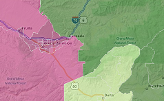RUCA Urban-Rural Map
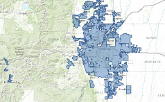Urban-Rural Boundary
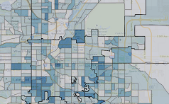CDHS: SNAP - Underserved Areas
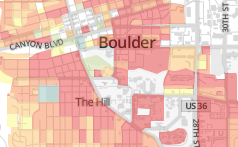Population and Housing Density